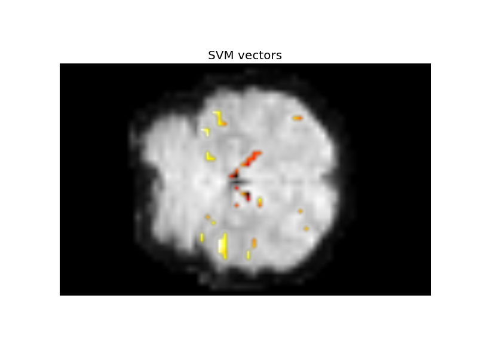

Extract from haxby fMRI data¶
This is a simple extract from data with no meaning and no filter.
Python source code: plot_haxby_visualisation.py
print __doc__
### All the imports
import numpy as np
from scipy import signal
from sklearn.svm import SVC
from sklearn.feature_selection import SelectKBest, f_classif
from sklearn.pipeline import Pipeline
from sklearn.cross_validation import LeaveOneLabelOut, cross_val_score
from nisl import datasets
from matplotlib import pyplot as plt
### Load dataset
data = datasets.fetch_haxby_data(data_dir='../nisl_data')
y = data.target
session = data.session
X = data.data
mask = data.mask
img_shape = X[..., 0].shape
mean_img = X.mean(-1)
# Process the data in order to have a two-dimensional design matrix X of
# shape (nb_samples, nb_features).
X = X[mask != 0].T
# Convert X to floats: working with integers gives rounding errors
X = X.astype(np.float)
print "detrending data"
# Detrend data on each session independently
for s in np.unique(session):
X[session == s] = signal.detrend(X[session == s], axis=0)
print "removing mask"
# Remove volumes corresponding to rest
X, y, session = X[y != 0], y[y != 0], session[y != 0]
n_samples, n_features = X.shape
n_conditions = np.size(np.unique(y))
### Define the prediction function to be used.
# Here we use a Support Vector Classification, with a linear kernel and C=1
clf = SVC(kernel='linear', C=1.)
### Define the dimension reduction to be used.
# Here we use a classical univariate feature selection based on F-test,
# namely Anova. We set the number of features to be selected to 500
feature_selection = SelectKBest(f_classif, k=500)
### We combine the dimension reduction and the prediction function
anova_svc = Pipeline([('anova', feature_selection), ('svc', clf)])
### Look at the discriminating weights
# re-train classifier on the full dataset
anova_svc.fit(X, y)
svc = clf.support_vectors_
# reverse feature selection
svc = feature_selection.inverse_transform(svc)
# reverse masking
act = np.zeros(img_shape)
act[mask != 0] = svc[0]
act = np.ma.masked_array(act, act == 0)
### Create the figure on z=13
plt.axis('off')
plt.title('SVM vectors')
plt.imshow(mean_img[:, 20, :], cmap=plt.cm.gray,
interpolation=None)
plt.imshow(act[:, 20, :], cmap=plt.cm.hot,
interpolation=None)
plt.show()
Script output:
detrending data
removing mask
Total running time of the example: 13 seconds